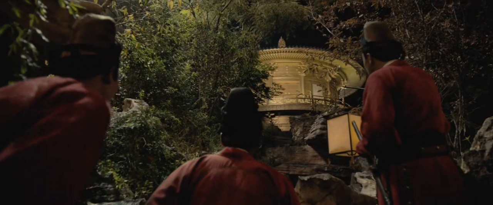

R1 · 电影剪辑语言分析
2.36秒 | 134 output tokens | no images
模型明确说明缺乏视觉、空间和时间连续性证据；列出转场切换、情绪节奏、意象突出假说。
仅知三个镜头简述，无原片视觉细节，无法确认镜头间空间或时间连续性。
独立审查：限制声明正确 · 剪辑功能非常概括，没有真正从视觉学习 · 真人导演意图与演员视线未验证
实际调用用户自建私有网关的 qwen3vl-8b。真实回传5份导演分析；模型本轮只接触文字摘要，未看到参考帧。所有未核实的导演意图依然是“假设”。



模型收到的是“多人场景 → 黑猫 → 人物近景”文字描述；尚不具备据此确证机位、视线或演员意图的证据。
2.36秒 | 134 output tokens | no images
模型明确说明缺乏视觉、空间和时间连续性证据；列出转场切换、情绪节奏、意象突出假说。
独立审查：限制声明正确 · 剪辑功能非常概括，没有真正从视觉学习 · 真人导演意图与演员视线未验证
5.54秒 | 396 output tokens | no images
模型给出5镜头、15秒方案，凭空增加观众席大屏，生命值写成12%，且把角色血量归零。
独立审查：12点被误作12% · 虚构观众席大屏 · 没有依据便判定角色死亡
6.54秒 | 459 output tokens | no images
模型能够识别4项旧问题，但新分镜第5镜再次写12→0，实际没有修复关键错误。
独立审查：错误识别与修正结果不一致 · 仍然强制伤害角色 · 角色信息被观众尖叫不当地泄露
7.31秒 | 518 output tokens | no images
恢复生命值约束，但第3镜“指尖特写+高桥插入”合并多机位，第4镜又向信标跑，动作倒流。
独立审查：同一个镜头里融合镜头组合 · 主角先操作再抵达目标 · 自称6项通过但人工审核不通过
15.90秒 | 488 output tokens | no images
5镜时间连续，避免直接判定死亡；仍出现“主角视角+固定机位”和画面里狙击准星可能泄露视角的疑点。
独立审查：时间区间覆盖正确 · 12点生命值没有归零 · 存在机位身份混淆 · 不应以模型自检✔代替独立审查
文本模型能够提供初步导演方案，也能根据纠错重写，但在R3自审中认错后再次写出生命值归零。在R4自称符合一镜头原则的同时仍合并插入镜头。因此独立硬约束审核和人工电影审美验收不可省略。
数据来自2026-11-14真实公网 GET 请求回复。当前保存为原文摘录和人工审查意见，不宣称拥有完整的HTTP原始报文。模型回复未必是电影事实。